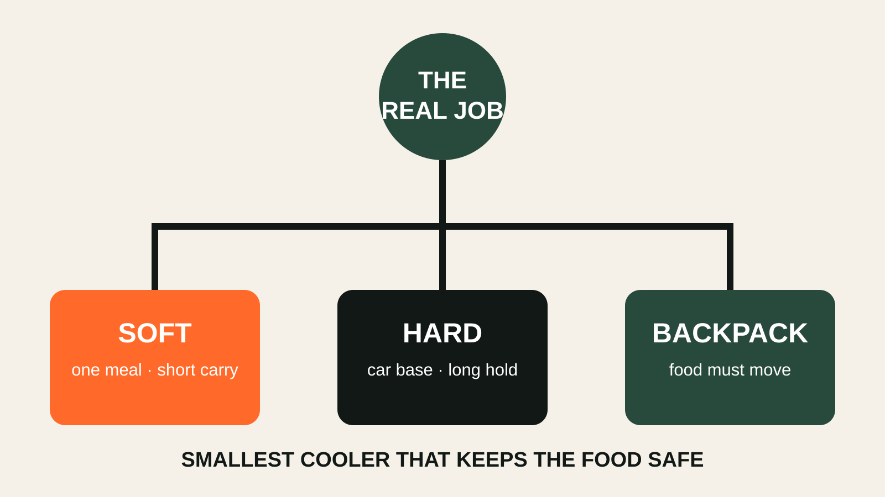
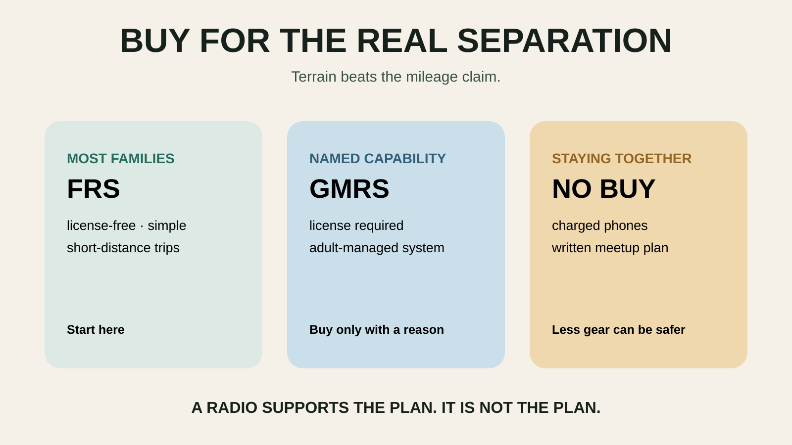

CAMPING
Fast camp setup
Tent, sleep system, lighting and kitchen choices that make family camping feel manageable.
PACK SMARTER
Useful stuff, honest priorities and fewer purchases that spend the next five years in the garage.
THE RULE
The best gear gets you out the door faster, keeps the kids comfortable longer, or solves a recurring problem. Everything else is garage décor.
Tent, sleep system, lighting and kitchen choices that make family camping feel manageable.

Water, layers, first aid, snacks, backup power and kid-specific extras.

A small system that covers weather shifts, spills, dead batteries and spontaneous stops.
GEAR PHILOSOPHY
Prepared beats expensive. Simple beats clever. Gear should support the story—not become the story.
NEW GEAR SYSTEM

Choose by the carry and the meal, then pack perishables to a real food-safety standard.
NEW GEAR SYSTEM

Three route-based loadouts, a real fit check and an honest reason to keep the pack you own.
WET-WEATHER GEAR

Match rain protection to movement, exposure and the actual exit plan.
GROUP COMMUNICATION

Legal service, honest range, battery choices and the no-buy option.
SUN AND HEAT

LIGHTING SYSTEM

Headlamp for movement, flashlight for backup, lantern for a stationary zone—and a no-buy test.
THE USEFUL STUFF
These are practical categories to compare—not a reason to overpack. Check fit, specifications and current reviews before buying.
Paid links: As an Amazon Associate I earn from qualifying purchases. You pay no additional cost.
Compare packed size, weather protection and a setup you can manage before dark.
See current options → COMPARE ON AMAZONArea lighting is more useful around camp than another handheld flashlight.
See current options → COMPARE ON AMAZONPrioritize fit, reachable water and room for layers rather than maximum capacity.
See current options → COMPARE ON AMAZONHands-free backup light belongs in the pack even on a daytime start.
See current options → COMPARE ON AMAZONA few fixed zones keep arrival gear and emergency supplies reachable.
See current options → COMPARE ON AMAZONCompare battery capacity, clamps, storage temperature and vehicle compatibility.
See current options →